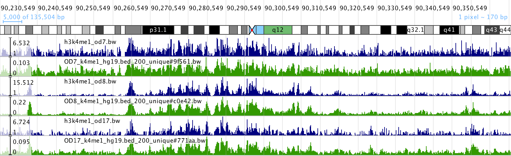
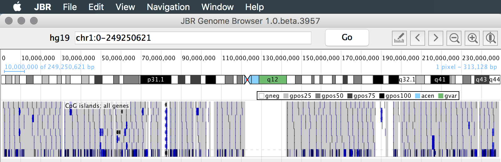
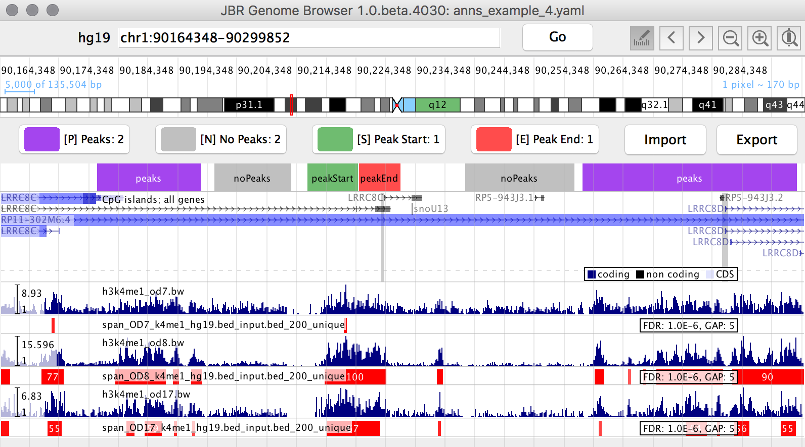
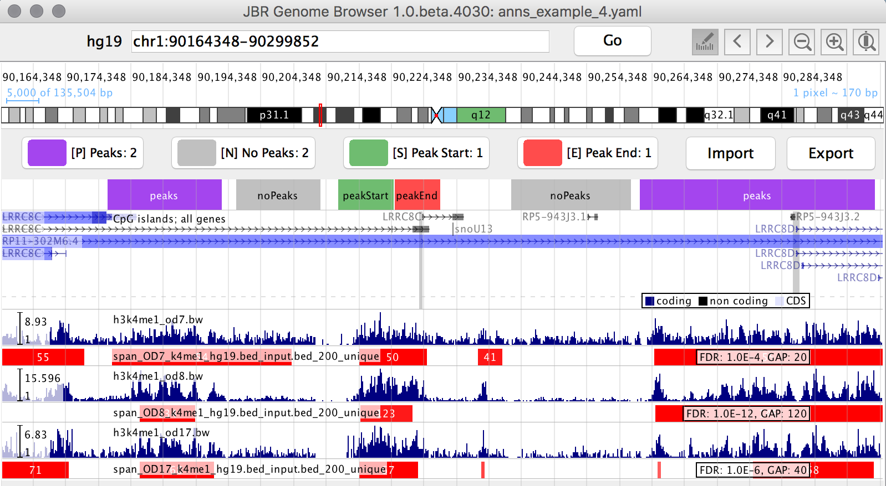
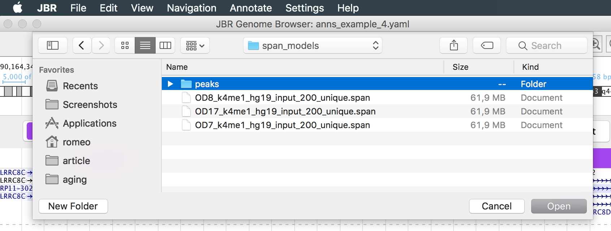
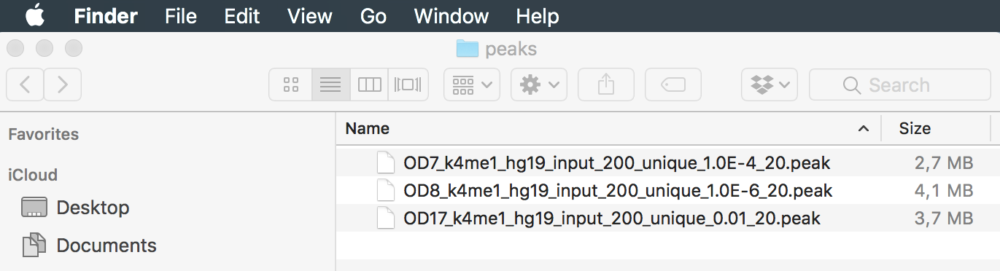

This tutorial demonstrates all steps of Peak Calling Solution which
was successfully applied to data analysis in Multiomics dissection of
healthy human aging project. The solution is semi-supervised algorithm consisted of
three steps: fit unsupervised SPAN model for ChIP-Seq or ULI ChIP-Seq tracks; annotate at
least 40 peaks in JBR Genome Browser; tune model to find best
parameters matching given annotations from previous step and use them for peak calling.
We recommend to complete this tutorial step by step without skipping any parts. All
necessary tools and data files will be available to download and links will be given in
Prerequisites section and further in text
where you will need them.
This tutorial includes all necessary data files. If you want to use it with your own
data, you need to prepare ChIP-seq signal tracks as:
BAM (or BED / BED.gz) reads coverage files for further processing
with SPAN.
BIGWIG files for visualization in JBR browser.
You can convert BAM / BED signal tracks to BIGWIG using bedtools, samtools and
bedGraphToBigWig utilities.
Or you may use deduplicated reads coverage BIGWIG tracks produced by SPAN as
approximation
for
Chip-Seq reads coverage tracks.
First we need to fit our unsupervised peak calling algorithm and generate SPAN
models. Model fitting is a time consuming operation but it is performed only once for each
ChIP-Seq track and could be done in parallel using computational cluster. Model fitting for
each track from this tutorial takes about 50 minutes on a machine with 4 CPU cores and 4 GB
RAM memory.
Fit model doesn't contain peaks but further peak calling will be rather fast - about 1 sec
for
given model parameters.
You may skip this model fitting step and download already fit SPAN models for this
tutorial:
Run SPAN locally or on your computational cluster. If
your
run SPAN on multiprocessor machine configure parallelism level for better performance using
--threads option:
We will use ./cache/fit/OD7_k4me1_hg19_input_200_unique.span
file later for peak calling tuning.
Processed read coverage is deduplicated read starts shifted by half fragment size and
summarized for bins of given size. For visualization purposes you may consider using SPAN
coverage BIGWIG tracks instead of reads coverage bigwig tracks. The tracks are different,
but
different isn't very significant for visualization. E.g. at the figure below
blue tracks are ULI ChIP-Seq reads coverage build from *.bam files; green tracks are
deduplicated coverage tracks produced by SPAN at the previous step. Shown region is
chr1:90,230,549-90,366,053.

Loading Data Into JBR Genome Browser
Launch JBR Genome Browser. By default it opens new
session for latest used genome. If current session isn't hg19 then create new
hg19 session using File | New Session...

To import track open File | Load URL(s)... action:
If you close JBR Genome Browser annotations will be lost so we recommend to
export them to a BED file: press Export button or select Annotate | Export Annotations... in main menu.
Load SPAN models generated in SPAN Models
Fitting step using JBR main menu File | Load SPAN
model... action. While importing SPAN models JBR does peak calling with default
SPAN parametes (FDR 1.0E-6, GAP 5). Optionally reorder tracks: select track; hold
Alt (MacOS: Option) key
and press up/down arrow
key to move track.

Parameters Tuning
Next step is to tune peak calling parameters using peak annotations from
Annotating Peaks in JBR step. To tune all SPAN
models loaded in JBR select in main menu Annotate | Tune
SPAN models.... To tune only selected SPAN model track(s) chose
Tune SPAN model from context menu.
Tuning takes about 1 minute per each model.

In Multiomics dissection of healthy human aging project peak
calling tuning helped us to get more consistent peak calling for our ULI ChIP-Seq
data and rescue some tracks which were considered as failed using other peak callers.
Peaks Export
To export peaks for all loaded SPAN model tracks select in main menu
Annotate | Export SPAN Peaks... and select
target directory.


As an alternative you can export peaks only for selected track(s): choose
Export SPAN model peaks... from context menu.